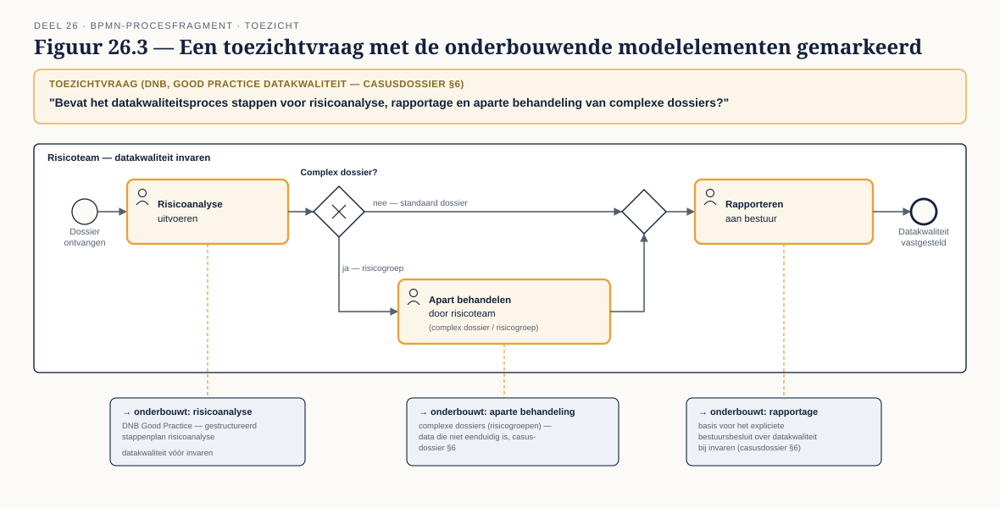
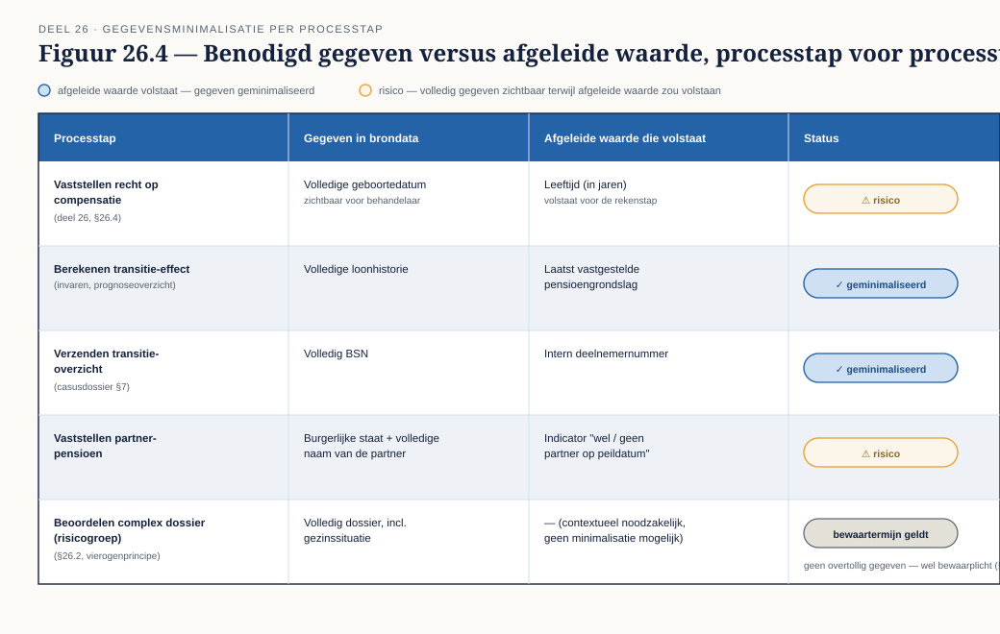

Deel 26 — Compliance, risk en control in modellen
Slidedeck · Ductus-cursus BPMN, CMMN & DMN · niveau 3 · deel 26 van 30 · 23 slides
Slide 1 — Titelslide
Compliance, risk en control in modellen — Deel 26
Slide 2 — De aanleiding
Wat je nulmeting blootlegde
Slide 3 — Leerdoelen
Na dit deel kun je…
Slide 4 — Van beleid naar beheersmaatregel
Een maatregel die niet in het model staat, bestaat niet

Slide 5 — Vier controlpatronen
Vierogenprincipe · functiescheiding · verplichte vastlegging · uitzonderingsautorisatie

Slide 6 — Opdracht 1
Vijf risico's — maatregel en modelpatroon
Slide 7 — Opdracht 2
Modelleer de controls in een bestaand proces
Slide 8 — Toezicht vertaald naar ontwerpeisen
Wat DNB en de AFM willen kunnen vaststellen

Slide 9 — Opdracht 3
Beantwoord de toezichtvraag — de deliverable
Slide 10 — Gegevensminimalisatie
Heeft deze stap het brongegeven nodig, of een afgeleide waarde?

Slide 11 — Bewaartermijnen als modelbeperking
Een dataobject met een houdbaarheidsdatum
Slide 12 — Opdracht 4
Gegevensminimalisatie — herontwerp twee stappen
Slide 13 — De audit trail
Wie, wanneer, welke gegevens, welke uitkomst

Slide 14 — Reconstructie na drie jaar
Een deelnemer vraagt: waarom is mijn aanspraak zo berekend?
Slide 15 — Juridisch houdbaar versiebeheer
Welke versie gold wanneer, wie keurde goed
Slide 16 — Opdracht 5
Specificeer de audit trail — de kerndeliverable
Slide 17 — Control bij casewerk
Beheersen zonder de autonomie te vernietigen
Slide 18 — Waar het omslaat
Verplichte vastlegging versus verplichte voorafgaande goedkeuring
Slide 19 — Opdracht 6
Twee varianten, verdedig de balans
Slide 20 — Wie wint, wie verliest
Aantoonbaarheid versus autonomie
Slide 21 — Opdracht 7
Stellingen
Slide 22 — Terugblik
Van risico tot audit trail tot casewerk
Slide 23 — Vooruitblik
Deel 27 — Beslisautomatisering op schaal